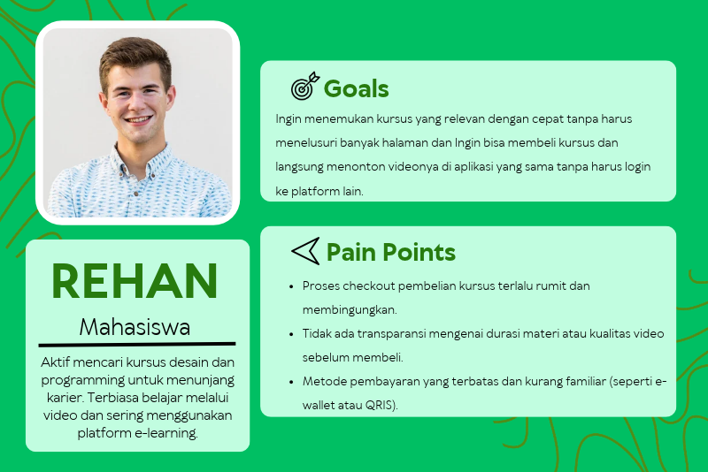
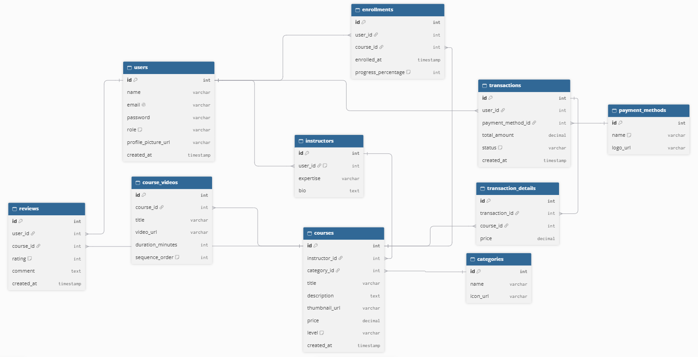
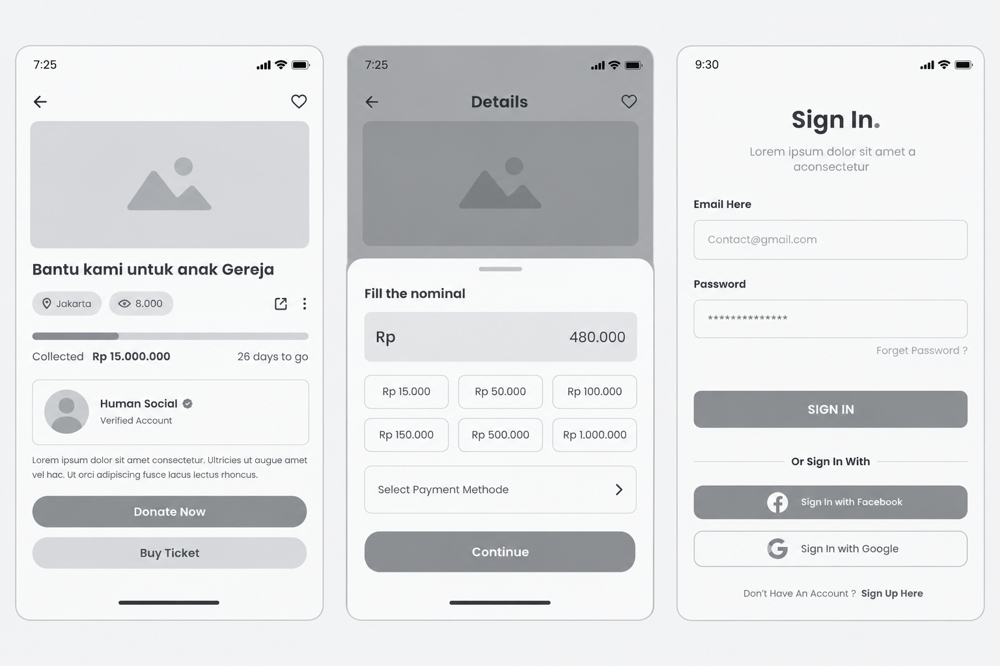
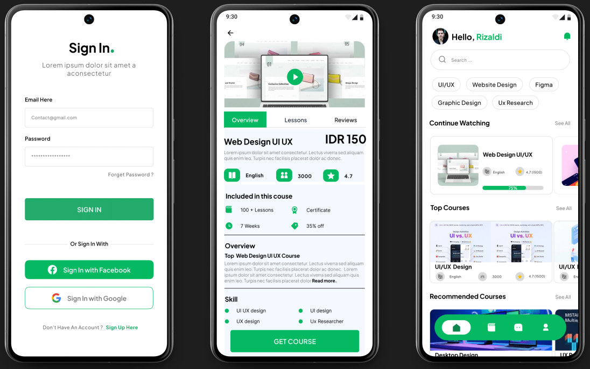

Konteks: Proyek ini merupakan technical test / proyek mandiri untuk posisi UI/UX Designer. Saya ditantang untuk merancang aplikasi mobile bernama DibimBel, sebuah platform e-learning (kursus daring) yang menyediakan berbagai materi pembelajaran berbasis video. Aplikasi ini dirancang agar pengguna dapat dengan mudah menemukan kursus, melakukan pembayaran, dan langsung mengakses materi video pembelajaran dalam satu genggaman.
Masalah: Banyak pengguna yang ingin belajar keterampilan baru secara mandiri merasa terhambat karena proses pencarian kursus yang membingungkan dan alur pembelian yang rumit. Selain itu, platform pembelajaran konvensional sering kali memisahkan antara tempat untuk membeli kursus dan tempat untuk menonton video, sehingga pengalaman belajar menjadi tidak efisien dan terpecah-pecah. Pengguna membutuhkan platform terpusat yang menyediakan alur dari pembelian hingga akses video belajar secara seamless (mulus) dan ramah pengguna.
Tujuan: Merancang antarmuka aplikasi yang intuitif dan modern, di mana pengguna dapat dengan mudah mengeksplorasi katalog kursus, melakukan transaksi pembayaran dengan aman, dan langsung menikmati akses video pembelajaran tanpa hambatan, hanya dalam hitungan detik.
Saya melakukan wawancara dengan 1 orang mahasiswa dan pekerja muda yang sering mengambil kursus online untuk meningkatkan skill mereka. Dari riset ini, saya membuat User Persona:

Konsep Relasi Utama
1. Users memiliki banyak Transactions (Transaksi pembelian kursus).
2. Courses memiliki banyak Videos (Materi video di dalam kursus) dan Reviews (Ulasan dari pengguna).
3. Transactions adalah parent dari detail pembelian (Transaction Details), yang mencatat kursus apa saja yang dibeli.
4. Payment Methods digunakan oleh Transactions (Metode pembayaran yang dipilih pengguna).

# Sign In: Proses masuk yang cepat dan minim friksi (mendukung Sign in with Google untuk mempermudah pengguna baru).
# Home & Search: Halaman utama yang menampilkan highlight kursus populer serta fitur pencarian dengan visual yang jelas (gambar thumbnail) agar pengguna cepat mengenali kursus yang ingin dipelajari.
# Course Detail : HHalaman di mana pengguna dapat melihat silabus, durasi video, ulasan, dan informasi instruktur sebelum memutuskan untuk membeli.

Pendekatan Visual (UI): Desain akhir menggunakan palet warna hijau segar (sebagai warna primary) dipadukan dengan putih dan abu-abu terang untuk menciptakan kesan edukatif, profesional, dan terpercaya (trustworthy). Tipografi yang digunakan adalah sans-serif yang ramah dan mudah dibaca. Ikon dibuat dengan gaya outline (garis) yang modern.

# Split Action Button: Pada halaman detail kursus, pengguna disajikan dua opsi tombol yang jelas: "Beli Kursus" (untuk transaksi langsung) dan "Coba Preview" (untuk menonton cuplikan video gratis). Ini memudahkan pengguna menilai kualitas kursus sebelum membeli.
# Quick Payment Method: Pada halaman pembayaran, saya menyediakan opsi pembayaran populer (E-Wallet, Virtual Account, Kartu Kredit) dengan ikon yang jelas dan terintegrasi, mengurangi keraguan pengguna saat checkout.
# Seamless Video Access:: Setelah pembayaran berhasil, pengguna langsung diarahkan ke halaman "My Course" di mana video dapat diputar langsung dengan player yang bersih dan fitur progress bar, tanpa perlu keluar aplikasi.
Hasil:Desain aplikasi DibimBel berhasil menyatukan dua kebutuhan utama (katalog kursus dan pemutar video) dalam satu antarmuka yang kohesif. Antarmuka yang minimalis dengan dominasi warna hijau dan tata letak yang bersih membuat aplikasi terasa ringan dan mudah dinavigasi oleh pengguna yang ingin fokus belajar.
Pembelajaran (Learning): Melalui proyek ini, saya belajar bahwa Visual Hierarchy (Hierarki Visual) sangat penting dalam aplikasi multi-fungsi. Menempatkan tombol aksi utama (seperti "Beli Kursus" dan "Mulai Belajar") secara strategis membutuhkan pertimbangan agar pengguna tidak bingung. Saya juga belajar bahwa pemilihan warna yang tepat (seperti hijau yang melambangkan pertumbuhan dan pembelajaran) sangat efektif untuk membangun kepercayaan (trust) pada aplikasi yang berhubungan dengan transaksi finansial dan edukasi.